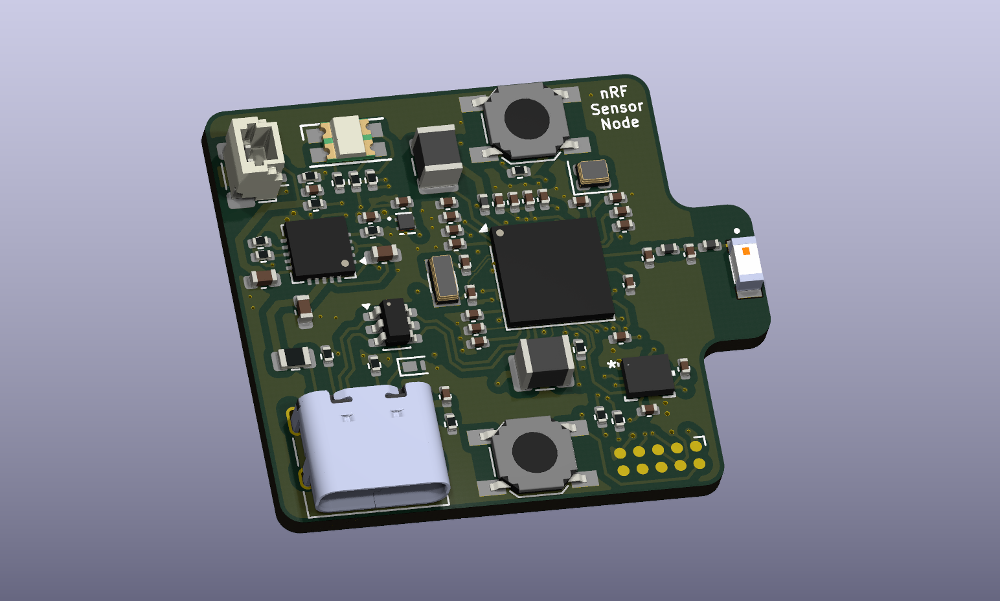
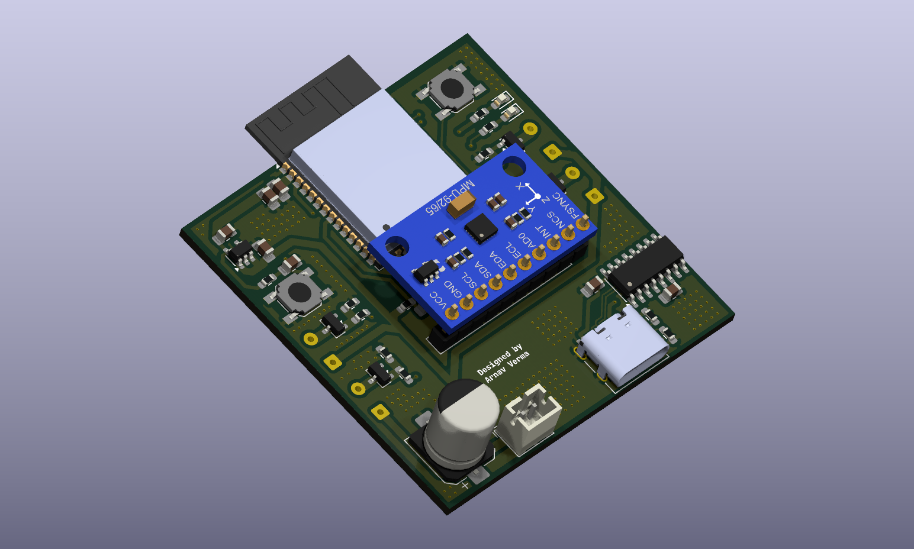
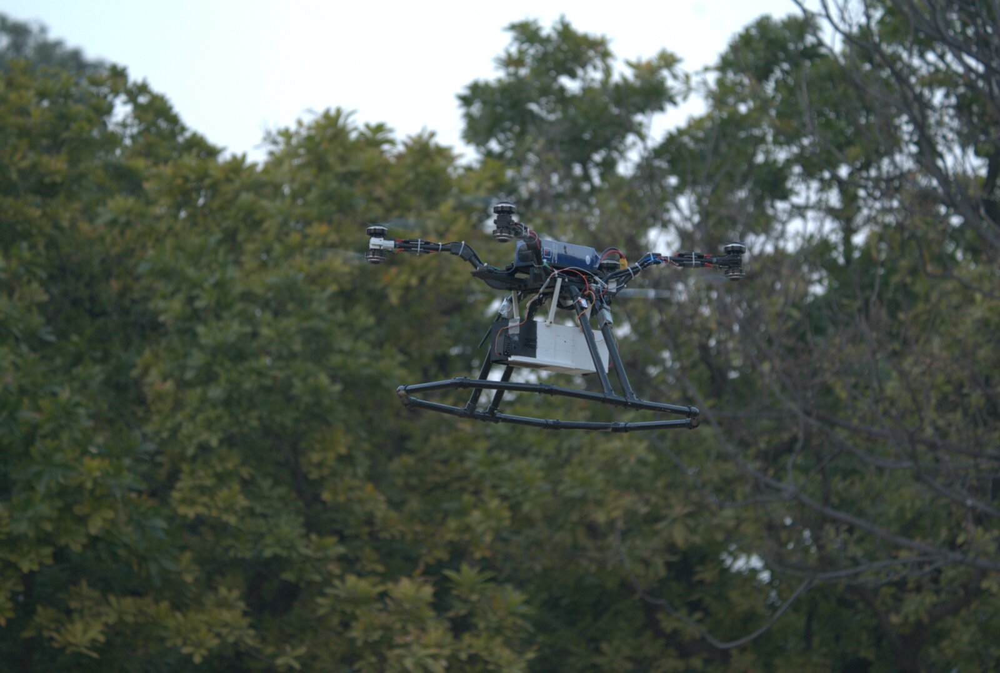
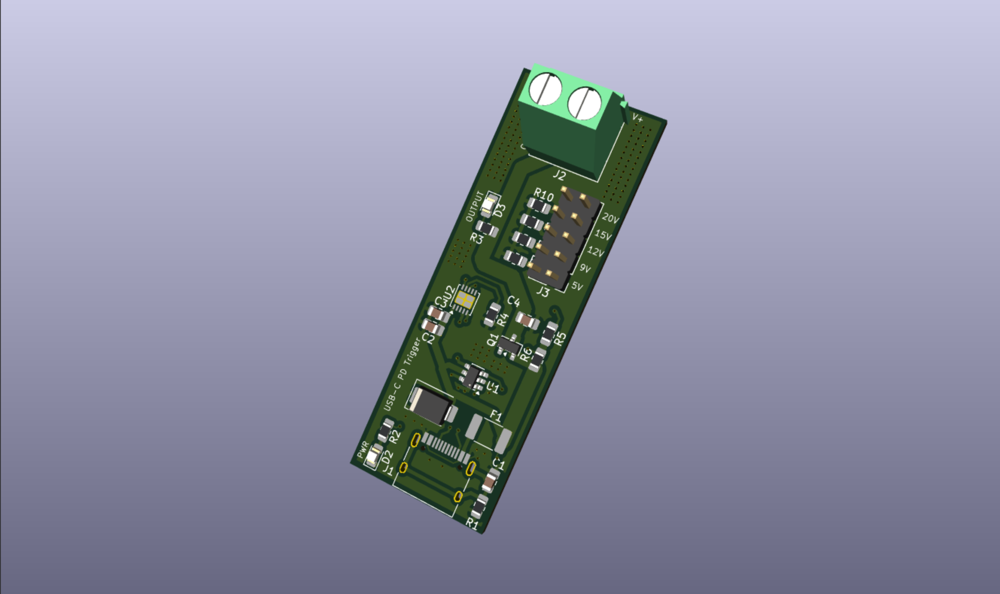

Isolated USB Radio-to-PC Interface
ADuM3160 USB isolation · dual-OS PTT/COR · JLCPCB-ready
Designed a fully-isolated USB-to-radio interface board for a commercial telecom client: ADuM3160 USB isolation, CM119B audio codec, FT231X UART, and dual-OS PTT/COR control for drop-in Asterisk chan_usbradio compatibility. Delivered a manufacturing-ready KiCad package for JLCPCB fab.

nRF52840 BLE Sensor Node
30×35mm · USB-C Li-ion charging · 50Ω PCB antenna feed
A compact BLE sensor node built around the nRF52840, with MCP73871 USB-C charge/power-path management, a TPS7A20 3.3V rail, onboard microSD data logging, and a hand-routed 50Ω antenna trace.

Universal Isolated SMPS
30W output · 4 kV isolation · Universal 85–265VAC input
Designed a 30W isolated AC-DC flyback power supply in KiCad 9 around the TOP244Y controller, converting universal 85–265 VAC mains input into regulated 12V/5V isolated DC outputs. Implemented EMI filtering, surge protection, a custom MYRRA 74030 transformer footprint, primary RCD and secondary RC snubber networks, and optocoupler-based isolated feedback. Delivered as a manufacturing-ready two-layer PCB with 4 kV reinforced isolation.

ESP32 Brushed Quadcopter Flight Controller
ESP32-WROOM-32 · MPU6500 IMU · 4× AO3400A brushed motor drive
A custom-designed flight controller built around the ESP32-WROOM-32 with an onboard MPU6500 IMU and AO3400A MOSFET brushed-motor drivers, laid out as a compact two-layer PCB in KiCad. Currently in hardware bring-up ahead of firmware flight testing.

6S UAV Power Distribution Board
80A trunk current · 2× TPS5450 regulated rails · 2oz high-current copper
Designed a 6S power distribution board with reverse-polarity and transient protection, dual independently regulated 5A rails for compute and servo power, and a raw ESC power bus sized for 80A combined trunk current.

Fully Autonomous Heavy-Lift UAV for Disaster Response
22 min endurance · 5 kg payload · fully autonomous
Designed, manufactured, and flight-tested a custom coaxial UAV with a 1000mm wheelbase, hybrid 3D-printed and carbon-fiber airframe, achieving 22 min endurance at 5 kg payload. Integrated Pixhawk + Raspberry Pi for autonomous survivor detection and payload delivery.

Custom FHSS Radio Link for UAV Swarms
Zero packet loss · 20 hops/sec · 16-channel FHSS
Built a frequency-hopping spread spectrum (FHSS) radio link from scratch using Ra-02 SX1278 LoRa modules and RadioLib on ESP32. Implemented a 16-channel LFSR-based pseudorandom hop sequence at 20 hops/sec, startup sync handshake, embedded periodic resync for long-term drift correction, and validated hop behavior on a HackRF One waterfall. Achieved zero packet loss at bench range with SF7/BW250 (~4800 bps effective throughput).

Autonomous Container Inspection Drone
Client engagement · Sim-to-flight pipeline delivered
Full Upwork engagement for Tow-botic Systems: BAPLIE container parsing, Gazebo world generation, PX4 SITL wind sweep simulations, autonomous reefer inspection with MAVSDK-Python, and tethered drone redesign.

Hexacopter Power Distribution Board
6× 40A ESC outputs · 75mm footprint
Designed a compact 75 mm power distribution board for a hexacopter UAV, featuring six 40 A ESC outputs, high-current power routing, and isolated regulated power rails for a Raspberry Pi, Pixhawk Mini, and dual servo actuators, with emphasis on power integrity, EMI mitigation, and reliable operation in autonomous flight systems.

USB-C Power Delivery Trigger Board
5V–20V negotiated output · HUSB238 controller
Designed a compact USB-C Power Delivery (PD) trigger PCB in KiCad that negotiates selectable PD voltages (5V, 9V, 12V, 15V, and 20V) using the HUSB238 controller. Includes USB-C input protection (ESD, TVS, resettable polyfuse), a PMOS-controlled output power path, configurable voltage selection via jumpers, status LEDs, and screw-terminal output.

Disaster Victim Scouting Quadcopter
14 in props · real-time onboard victim detection
Built a fast wide-area search quadcopter for disaster response, powered by 5010 360KV motors on 14-inch glass fiber propellers for extended range and payload-free speed. Carries an onboard Raspberry Pi with a camera module running real-time victim detection models, geotagging detected victims with GPS coordinates. Operates as the scouting half of a two-drone system, handing off precise coordinates to a companion heavy-payload drone for medkit and supply delivery to confirmed locations.